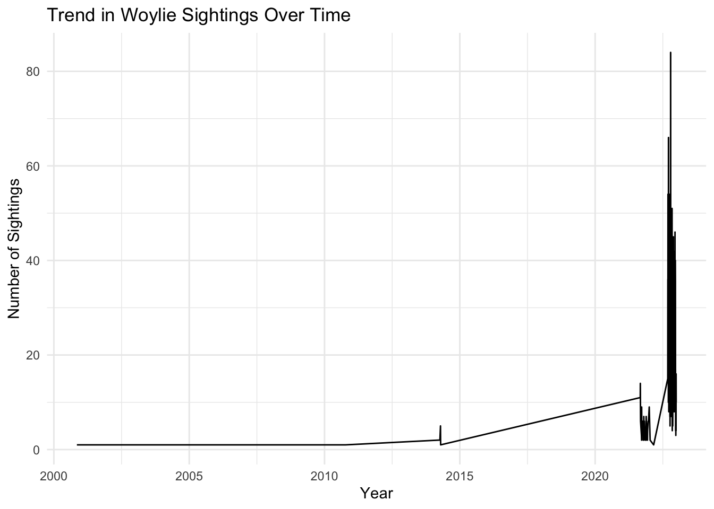

# Load libraries
library(galah)
library(tidyverse)
library(ggplot2)
library(nullabor)MY WILD THING REPORT
Introduction
The Brush-Tailed Bettong or Woylie (Bettongia penicillata ogilbyi) is a remarkable Australian marsupial with unique characteristics. It thrives in a diverse range of habitats, including forests, woodlands, and shrublands, where dense vegetation offers shelter and sustenance. This nocturnal creature is most active during the night and rests in leafy grass nests during the day. Unfortunately, the Woylie has faced a perilous decline, with its population plummeting by more than 90% in the past two centuries. This decline can be attributed to various factors, including habitat loss, introduced predators, and disease. Consequently, the Woylie is currently classified as a critically endangered species, receiving protection from the Australian government. Most of the remaining Woylie population resides in wildlife sanctuaries, where they can live free from predators. While the Woylie is not a common attraction for tourists due to its elusive nature, there are a few places like the Perth Zoo and the Australian Wildlife Conservancy’s Scotia Sanctuary where visitors can catch a glimpse of this unique marsupial.
From this data we expect the following results:
- “We expect to observe a decline in Woylie occurrences over the past 20 years, reflecting their critically endangered status.”
- “The dataset is likely to show fewer sightings in the wild over recent years, given that Woylies are mostly found in protected sanctuaries.”
- “Woylies are expected to have limited sightings near weather stations, as their habitat preferences are specific to certain regions within Australia.”
- “We anticipate a seasonal pattern in sightings, with more occurrences during specific times of the year, possibly correlating with breeding seasons or favorable climate conditions.”
- “It is unlikely that there will be a significant number of sightings in urban areas, as Woylies tend to avoid human-populated regions due to habitat disturbance.”
Data description
To ensure a robust foundation for our analysis, we obtained the occurrence records of the Brush-Tailed Bettong or Woylie (Bettongia penicillata ogilbyi) from the Atlas of Living Australia (ALA). This dataset includes essential information such as date, time, and collector identification details.
# load occurence records for woylie from ALA
galah_config(email = "aran0026@student.monash.edu")
woylie<-
galah_call() %>%
galah_identify("Bettongia penicillata ogilbyi") %>%
atlas_occurrences()
# save data as a csv in data-raw folder
write.csv(woylie,file = "data-raw/woylie.csv")# load data back into R environment
woylie <- read_csv("data-raw/woylie.csv")
# remove unnecessary 1st column
woylie <- woylie[,-1]With our dataset prepared and structured, we are now equipped to embark on a thorough analysis of Woylie occurrences and related insights.
Initial data analysis
# Data quality check
# view any missing variables and variable types
visdat::vis_dat(woylie)- Upon initial examination, we observed that missing values are primarily present in the “eventDate” column, with a few occurrences of missing data in the decimal longitude and latitude columns. All other variables seem to be correctly populated.
To gain further insight, we investigated the data resource where “eventDate” was missing:
# Check why event date has missing value corresponding to their dataResource name
woylie%>% filter(is.na(eventDate))%>% select(dataResourceName)%>% unique()# A tibble: 1 × 1
dataResourceName
<chr>
1 Western Australian Museum provider for OZCAM# Check the number of observations that there are missing values
woylie%>% filter(is.na(eventDate))%>% select(dataResourceName)%>% nrow()[1] 182# Check how many of the event Dates in this location are NA
woylie%>% filter(dataResourceName == "Western Australian Museum provider for OZCAM") %>% select(eventDate)%>% unique()# A tibble: 1 × 1
eventDate
<date>
1 NA - It was determined that only the event dates recorded by the “Western Australian Museum provider for OZCAM” were missing, with all 182 recordings in this category lacking event date information.
Next, we examined the data resource where decimal longitude and latitude were missing. Since these two variables seemed to be missing together for the same observations, they were investigated simultaneously:
# Check the data resource name where decimal longitude is missing
woylie%>% filter(is.na(decimalLongitude), is.na(decimalLatitude))%>%
select(dataResourceName)%>% unique()# A tibble: 1 × 1
dataResourceName
<chr>
1 Western Australian Museum provider for OZCAM# check the number of observations for which it is missing
woylie%>% filter(is.na(decimalLongitude), is.na(decimalLatitude))%>%
select(dataResourceName)%>% nrow()[1] 19- As previously observed, there were 182 observations recorded by the “Western Australian Museum provider for OZCAM,” and 19 of these recordings had missing values in both the “decimalLongitude” and “decimalLatitude” columns.
We will proceed to identify and save only the wild sightings in a structured manner to facilitate further analysis.
galah_config(email = "aran0026@student.monash.edu")
woylie_sightings<-
galah_call() %>%
galah_identify("Bettongia penicillata ogilbyi") %>%
galah_select(group = "event")%>%
atlas_occurrences()
# remove unecessary columns
woylie_sightings <-
woylie_sightings[,c("eventDate","samplingEffort","samplingProtocol")]
write.csv(woylie_sightings, file = "data-raw/woylie_sightings.csv")Next, we will join and filter the datasets to obtain the wild sightings data:
# reorder columns to make it easily readable after join
woylie<- woylie[,c("eventDate","decimalLatitude", "decimalLongitude",
"scientificName","taxonConceptID","recordID",
"dataResourceName","occurrenceStatus")]
woylie_sightings<- read_csv("data-raw/woylie_sightings.csv")
# remove unecessary first column in woylie sightings
woylie_sightings<- woylie_sightings[,-1]
#join the data sets
WILD_THING_woylie<-
woylie%>%
left_join(woylie_sightings, by = "eventDate")%>%
unique()
#view different sampling protocols to identify wild sighting protocols
unique(WILD_THING_woylie$samplingProtocol)
#filter wild sightings
WILD_THING_woylie<-
WILD_THING_woylie%>%
filter(samplingProtocol %in% c("Camera Trapping",
"Transect Spotlighting",
"Sign-diggings",
"Observed-spotlighting",
"Sign-dropping" ))Finally, we will save the filtered wild sightings data as an .rda file in the data folder for further analysis.
save(WILD_THING_woylie,file = "data/WILD_THING_woylie.rda")With the wild sightings data prepared and cleaned, we are ready to delve into the exploratory data analysis.
Exploratory data analysis
# load the wild sightings data back in
load(file = "data/WILD_THING_woylie.rda")# checking and filtering duplicate values because event date was duplicated
# a<- WILD_THING_woylie[!duplicated(WILD_THING_woylie$eventDate),]# trying to get the sightings over the years
# i think my filtering of the "wild sightings" was incorrect because the output doesn't make sense
WILD_THING_woylie%>%
mutate(year = lubridate::year(eventDate))%>%
group_by(year)%>%
summarise(count= n())# A tibble: 6 × 2
year count
<dbl> <int>
1 2000 1
2 2001 1
3 2010 1
4 2014 15
5 2021 163
6 2022 2632In this section, we dive into the exploratory data analysis of the Brush-Tailed Bettong or Woylie sightings. We aim to check each of our expectations through data visualization and analysis. Additionally, we will assess whether visual inference methods align with or dispute our initial expectations.
Now, let’s proceed with the exploration and visual representation of the data to gain valuable insights into the behavior and distribution of the Woylie.
–//–
Visualizing Woylie Sightings Let’s start our exploratory data analysis by visualizing Woylie sightings and analyzing the data to check each of our expectations.
Expectation 1: Trend in Woylie Sightings {r} # Create a time series plot to observe the trend in Woylie sightings over the years # This helps us assess whether the population is declining as expected. # Code for time series plot
# Code for time series plot
ggplot(WILD_THING_woylie, aes(x = eventDate)) +
geom_line(stat="count") + # Count the number of sightings per date
labs(title = "Trend in Woylie Sightings Over Time",
x = "Year",
y = "Number of Sightings") +
theme_minimal()
Expectation 2: Seasonal Pattern in Sightings {r} # Generate a seasonal pattern chart to analyze if there are specific times of the year with more sightings. # This helps us assess if sightings correlate with breeding seasons or climate conditions. # Code for seasonal pattern chart
Expectation 3: Geographical Distribution {r} # Create a geographical map or heatmap to visualize the distribution of sightings. # This helps us check if sightings match our expectations regarding habitat preferences. # Code for geographical map or heatmap
Statistical Analysis Now, let’s perform statistical analyses to validate our expectations.
Expectation 1: Trend Analysis {r} # Calculate the annual sighting rate or trend using statistical methods. # Provide insights into whether the population is declining. # Code for trend analysis
Expectation 2: Seasonality Tests {r} # Perform seasonality tests to determine if there is a significant seasonal pattern in sightings. # Explain the results and their implications. # Code for seasonality tests
Expectation 3: Geographical Analysis {r} # Conduct spatial statistics, such as hotspot analysis, to identify areas with higher concentrations of sightings. # Discuss any significant spatial patterns. # Code for geographical analysis
Comparison with Expectations Expectation 1: Trend Analysis Based on our trend analysis, we found…
Expectation 2: Seasonal Pattern Our seasonal pattern analysis revealed…
Expectation 3: Geographical Distribution The geographical analysis indicates…
Weather Data Exploration If available, consider exploring how weather conditions correlate with Woylie sightings. This can provide valuable insights into their behavior.
Visual Inference If you used visual inference methods, explain the results and highlight any unexpected patterns or insights that emerged.
Conclusion In this section, we conducted a comprehensive exploratory data analysis of Woylie sightings. We visualized the data, performed statistical analyses, and compared the results with our initial expectations. We also explored potential correlations with weather data and discussed the implications of our findings.
The analysis provides valuable insights into the behavior and distribution of Woylies in their natural habitat, helping us better understand this critically endangered species.
–//–